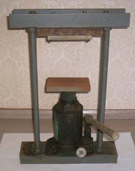
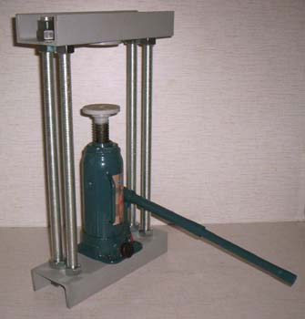
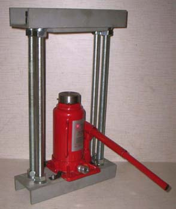
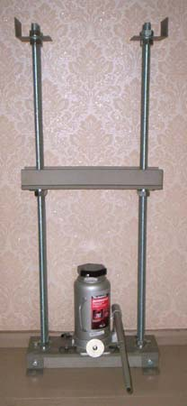
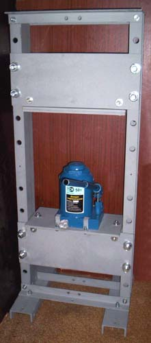

Прессы. Прессование
Введение
Прессы позволяют создавать достаточно большие усилия сжатия (тысячи килограмм-сил). Они могут использоваться для получения изделий из мелкодисперсных веществ (порошка или опилок) и пластика, изготовления постоянных магнитов [1], вырубания отверстий, прессования деталей из листовых материалов, гибки деталей. Рассчитаны, сконструированы и построены малогабаритные прессы на различные долговременные усилия от 5 до 50 тонн (50 ... 500 кН).
Пресс настольный ручной с гидравлическим домкратом 5 тонн

Пресс настольный ручной с гидравлическим домкратом 10 тонн

Пресс настольный ручной с гидравлическим домкратом 12 тонн

Пресс напольный ручной с гидравлическим домкратом 20 тонн

Пресс напольный ручной с гидравлическим домкратом 50 тонн

Ссылки:
13.05.2018
12.09.2019
Альтернативные источники
энергии
Компьютеры и
Интернет
Магнитные поля
Механотронные системы
Перспективные
разработки
Электроника и технология